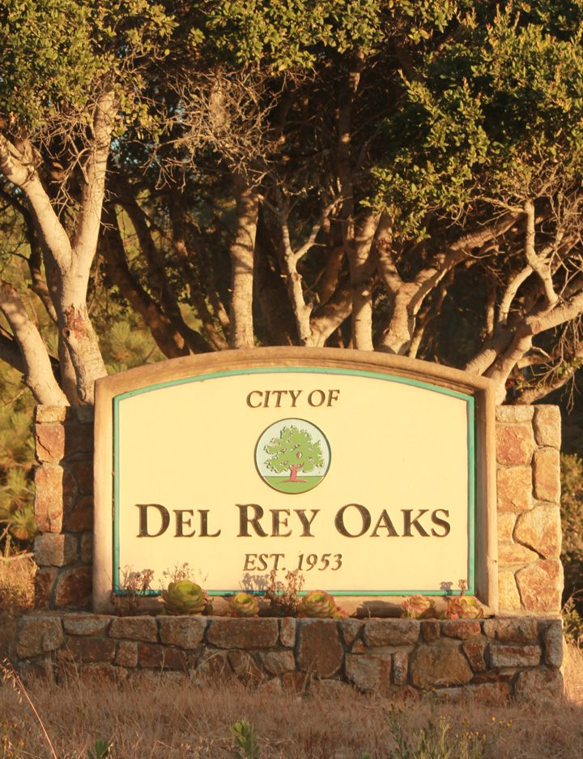
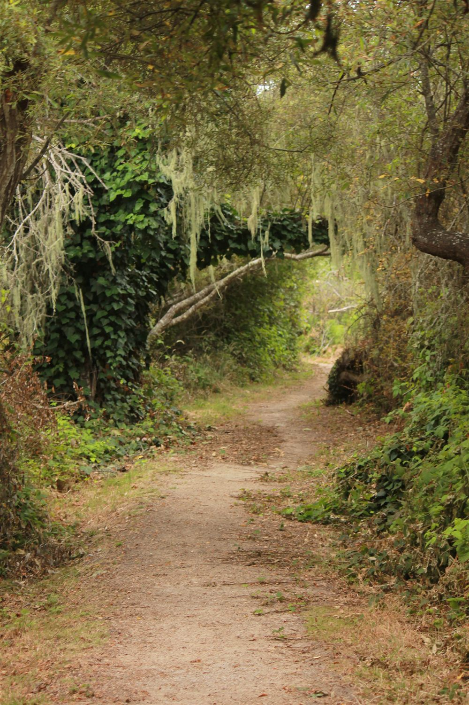
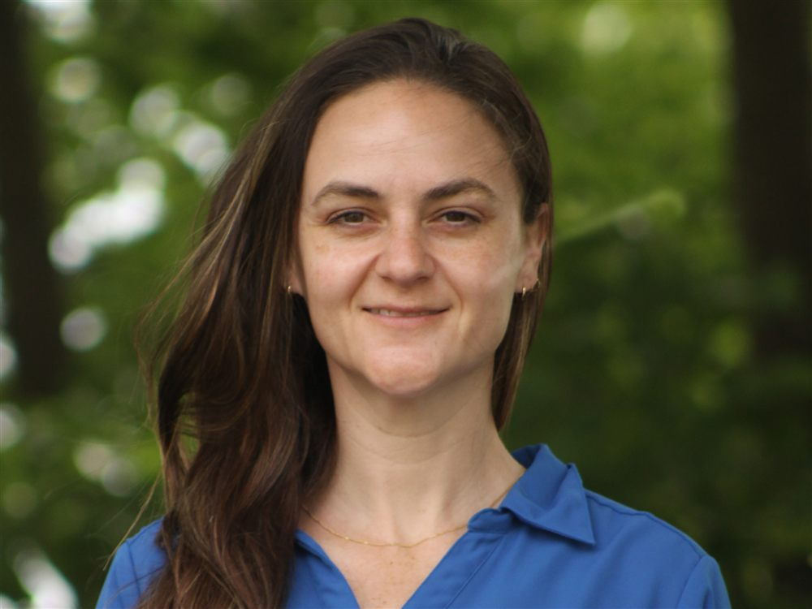

My name is Cheryl Parker, and I want to be your next city councilmember
For nearly two decades, I've solved the kinds of complex infrastructure, water, transportation, and environmental challenges that cities face every day. As a licensed civil engineer, I've managed public projects, evaluated competing priorities, protected taxpayer investments, and delivered practical solutions — and I believe Del Rey Oaks deserves that same careful, evidence-based decision-making at City Hall.
Del Rey Oaks is at an important crossroads. Decisions made over the next several years about growth, infrastructure, public safety, and financial sustainability will shape our community for decades to come. These are complex issues that require thoughtful leadership, sound judgment, and a willingness to ask difficult questions before commitments are made.
Throughout her nearly two-decade career as a licensed civil engineer, Cheryl Parker has helped communities solve complex infrastructure and environmental challenges. She has worked with local governments, state agencies, federal partners, utilities, consultants, and contractors to deliver projects that protect public resources, meet regulatory requirements, and serve the public interest.
That experience has taught her to evaluate facts before forming conclusions, weigh long-term costs alongside short-term needs, and make decisions based on evidence rather than assumptions. Engineers are trained to identify risks, solve problems collaboratively, and plan for the future — qualities that are just as valuable in public service as they are in engineering.
Cheryl isn't a polished politician. She's running because she believes Del Rey Oaks deserves practical, transparent, and accountable leadership grounded in professional experience and a genuine commitment to the community she calls home.
She will bring an engineer's approach to City Hall: listening first, asking the right questions, evaluating the facts, and making decisions that protect taxpayers while preserving the character and quality of life that make Del Rey Oaks such a special place to live.

Cheryl has called Del Rey Oaks home since 2020. Like many residents, she came here looking for a place to put down roots, and she found it. She and her husband have spent the past five years renovating their house — and investing in their neighborhood and the city's future.
She grew up in a small rural town, where she learned early on what it means to truly rely on your neighbors and to show up for them in return. Those lessons stayed with Cheryl, shaped by the years she spent watching her grandmother, an immigrant from England. She taught Cheryl firsthand about the dignity of elder care, the realities of living on a fixed income, and just how much it matters when a community is there to catch you when you fall.

Cheryl has spent nearly twenty years solving complex public infrastructure challenges. As a licensed Civil Engineer with a Master's degree in Civil and Environmental Engineering, she has worked at most levels of government and in private consulting, giving her firsthand experience with how projects are planned, funded, designed, regulated, and built.
Her career includes transportation engineering, environmental protection, drinking water systems, utility infrastructure, regulatory compliance, capital improvement planning, and federal civil engineering. She understands how to evaluate technical reports, identify risks before they become expensive problems, and ensure public dollars are spent wisely.
That is exactly what council members do.
As a volunteer with Engineers Without Borders, Cheryl helped design and construct a clean water system for a rural community in Honduras, providing reliable drinking water to families who had never before had dependable access. The experience reinforced her belief that good engineering improves lives, and that thoughtful public infrastructure is one of government's most important responsibilities.

Del Rey Oaks is weighing major decisions on the development of its remaining Fort Ord land, working through serious infrastructure questions, and facing real financial pressure that could affect its future as an independent city. These aren't routine issues — they require careful analysis, technical judgment, and someone willing to ask hard questions before decisions are made.
The city is making decisions that will define it for generations. Those decisions deserve more than opinions — they deserve technical expertise, financial accountability, and meaningful public engagement. Cheryl is running because she has spent her career making exactly these kinds of decisions.
Cheryl's platform is built on the values of the residents — open process, real expertise, and a seat at the table for every neighbor
Development that serves residents, present and future through a transparent process to allow for real public input before decisions are made.
Del Rey Oaks sits on the edge of one of the most significant land development opportunities on the Monterey Peninsula. How we develop the former Fort Ord parcels will shape our city for generations. Cheryl believes in integrating the natural world into developed space, not paving over it. Cheryl's experience reviewing engineering reports, environmental requirements, utility infrastructure, and public works projects allows her to ask the questions that protect residents before major commitments are made and make sure the public is fully informed.
Safer streets start with addressing speeding on residential roads — through traffic calming, smart planning, and strong community partnerships.
Speeding on residential streets is one of the most common concerns residents raise, and it's a solvable problem — through traffic calming measures like signage, striping, speed bumps, and targeted enforcement in the areas where it matters most.
Throughout her career, Cheryl has worked on transportation, water, and infrastructure projects where protecting the public is always the highest priority. As a dedicated public servant, she believes every City Council decision should consider its impact on safety, accessibility, and the long-term well-being of residents.
Cheryl also believes strong public safety depends on supporting the dedicated Public Safety Officers who serve Del Rey Oaks while fostering trust, communication, and collaboration between residents and first responders.
18 years as a licensed civil engineer, delivering infrastructure projects on time, within budget, and with minimal impact on residents.
Infrastructure problems happen everywhere and they require knowledgeable, experienced people to solve them. Infrastructure is more than fixing roads and pipes. It's evaluating life-cycle costs, prioritizing projects, securing grants, managing contractors, and making sure taxpayers receive lasting value for every dollar received. A licensed civil engineer on the council changes the dynamic: Cheryl knows what questions to ask, and how to work through the answers.
Open government works best when residents are informed, engaged, and invited to participate before decisions are made.
Del Rey Oaks is strongest when every resident has the opportunity to help shape the decisions that affect our community. Public participation shouldn't be treated as a formality at the end of the process — it should be an essential part of how the City conducts business.
Throughout her engineering career, Cheryl has worked with residents, public agencies, regulators, and community stakeholders to solve complex challenges. She understands that the best solutions come from listening carefully, evaluating different perspectives, and making decisions based on facts, transparency, and meaningful public input.
Cheryl believes City Hall should actively encourage participation by making information accessible, restoring opportunities for residents to serve, and ensuring advisory committees are fully staffed and empowered to provide thoughtful recommendations before major decisions are made.
Using engineering expertise to ensure decisions are guided by current data, sound science, and the voices of Del Rey Oaks residents.
Airport noise is a real concern for many Del Rey Oaks residents. Cheryl believes decisions about flight operations and their impact on our community should be based on current, reliable data — not outdated assumptions.
As a licensed civil engineer, Cheryl knows how to evaluate technical studies and ask the right questions before drawing conclusions. She will work with residents, aviation officials, and independent experts to better understand the real impact of airport operations on our neighborhoods.
Cheryl believes Del Rey Oaks should have a strong voice in regional discussions about airport operations and their impact on our community. Residents deserve meaningful representation, clear communication, and an opportunity to help influence decisions that affect their quality of life.
A valuable public asset deserves an open process, thoughtful planning, and a use that benefits both today's residents and future generations.
The former Garden Center property is one of Del Rey Oaks' most valuable community assets. Decisions about its future should be made through a transparent, competitive public process that gives residents meaningful opportunities to shape the outcome. Cheryl believes any future use should reflect community priorities while creating long-term value for the City through a sustainable revenue stream that helps support essential public services.
A city our size punches above its weight when we build strong regional relationships — and below it when we don't show up.
We share infrastructure, services, and challenges with our neighbors on the Monterey Peninsula. Throughout her career Cheryl has worked with local governments, state agencies, federal partners, utilities, consultants, and contractors. She understands that successful regional partnerships require preparation, collaboration, and accountability. On council, Cheryl will actively build those relationships and make sure DRO has a voice in regional decisions.
Protecting the character, natural beauty, and quality of life that make Del Rey Oaks a special place to call home.
As Del Rey Oaks grows, we have a responsibility to preserve the open spaces, neighborhoods, and small-town character that define our community. Cheryl believes thoughtful planning can balance responsible growth with environmental stewardship, ensuring future generations enjoy the same natural beauty and sense of community that residents value today.
Five ways to help, listed easiest first. The most valuable thing you can do for this campaign doesn't cost anything.
Facebook is where the campaign lives, and where updates get posted. Following costs you nothing, and it's how neighbors find out that someone they know is paying attention.
Follow on FacebookIn a race this small, a visible list of neighbors standing behind Cheryl matters. Add your name to show your support.
Del Rey Oaks is small enough that word of mouth is most of the race. If you think Cheryl is the right choice, say so — over the fence, at the park, in line at the store. That conversation carries more weight than anything we can print.
This is the one that matters most. A two-minute conversation on a doorstep does something a postcard never will.
No experience needed. You'd go out with someone who's done it before, with a short list of streets and something to hand people. If nobody's home, you leave a card.
Not sure you're up for knocking on doors? Say so below and help another way — dropping cards on porches, hosting a yard sign, or calling a few people you already know.
And if none of the above fits your schedule — a contribution always helps, and it funds the campaign directly. There are no paid staff, so every dollar buys paper, signs, and stamps. Nothing else.
Give what's easy. Twenty dollars is a real help at this size.
Give another amountContributions are processed securely by Anedot — card details never touch this site. Prefer to give by check? Email servingdro@gmail.com.
Questions about anything above? Get in touch.
Email: servingdro@gmail.com
Phone: (831) 224-7558
Campaign HQ: Del Rey Oaks, CA 93940
Facebook: Cheryl For Del Rey Oaks